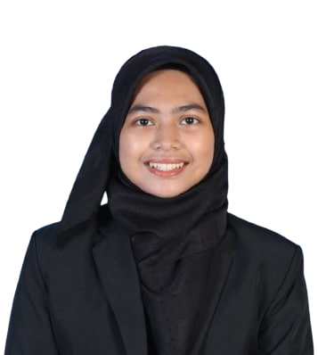

I am a Statistics student with a strong interest in data analysis, problem solving, statistical modelling, and transforming data into meaningful insights.

Final Year Statistics student at Universiti Teknologi MARA (UiTM) with experience in R programming, data analysis, statistical modelling, data visualization and research projects...
Universiti Teknologi MARA (UiTM) Kampus Kota Bharu
Elective in Big Data · Final Year Project (ARDL Approach)
Kolej Matrikulasi Negeri Sembilan (KMNS)
2 Years Programme
SMK Chetok
Science Stream
Click on any certificate to view it
Good Virtues Co. × Universiti Teknologi MARA (UiTM)
2024Community of Bachelor Science (Hons.) Statistics (COMOBISTA)
2024Jawatankuasa Perwakilan Kolej Tun Dr. Mahathir, UiTM
2023Community of Bachelor Science (Hons.) Statistics (COMOBISTA)
2023School of Medical Sciences, Universiti Sains Malaysia (USM Health Campus)
2024COMOBISTA Academic Club, UiTM Kelantan
Sep 2023 – Mar 2024 · 7 months
Supported the planning of religious and academic programs. Collaborated with peers to organize impactful student activities within the faculty.
Dato' Onn College, UiTM Kelantan
Sep 2023 – Mar 2024 · 7 months
Assisted in managing welfare and safety programs for students. Coordinated activities under the Dato' Onn College Student Representative Committee.
Student Representative Committee (JPP), KMNS
Sep 2021 – May 2022 · 9 months
Assisted in leading the Religious Affairs Bureau under JPP. Planned and coordinated religious programs to support students' spiritual and moral development.
Kolej Matrikulasi Negeri Sembilan (KMNS)
Sep 2022 – May 2023 · 9 months
Managed operations and activities of the KMNS Surau. Supported the organization of religious programs, talks, and weekly congregational activities.
Kolej Matrikulasi Negeri Sembilan (KMNS)
May 2022 – Sep 2023 · 1 year 5 months
Assisted in managing new student orientation week. Coordinated logistics, registration, and crowd control to ensure smooth onboarding activities.
School Prefectorial Board, SMK Chetok
2019 – 2021
Led the discipline bureau within the school prefectorial board, maintaining order and upholding school regulations to create a positive learning environment.
SMK Chetok
2019 – 2021
Led the Puteri Islam uniformed body, organizing religious, discipline, and community activities to develop members' character and leadership skills.
Puteri Islam Uniformed Body, SMK Chetok
2019 – 2021
Led the marching platoon during school parades and competitions, demonstrating strong discipline, coordination, and leadership under pressure.
MERCY Malaysia
Contributed to humanitarian and social service activities, supporting community welfare initiatives.
ViewYouth Empowerment Fair (YEF) 2025
Managed crowd flow, guided attendees, and ensured a safe and organized environment at World Trade Centre KL.
ViewKelantan Future Leaders Institute (KFLI)
Served as committee member for various programs under KFLI, assisting in planning, coordinating and executing multiple community and youth development programs.
ViewKelantan Future Leaders Institute (KFLI) & UiTM Kelantan
Hosted and emceed multiple programs and events under both KFLI and UiTM, engaging audiences and ensuring smooth event flow.
ViewUniversiti Teknologi MARA (UiTM)
Assisted in organizing and managing Pilihan Raya Kampus UiTM Cawangan Kelantan for fair election procedures.
ViewUniversiti Teknologi MARA (UiTM)
Participated in Taman Tengku Anis Clean-Up Programme, contributing to environmental sustainability efforts.
ViewUniversiti Teknologi MARA (UiTM)
Conducted survey and data collection activities during Festival Citarasa Kelantan, Kota Bharu.
ViewHere are some of the projects I've worked on.
Investigated the impact of health expenditure, GDP and carbon emissions on life expectancy in Malaysia, Singapore, and Thailand using the ARDL approach.
View Project (Ongoing)Analyzed insurance claim data to identify suspicious patterns and support fraud detection strategies using data mining techniques.
View ProjectDeveloped a database system for managing patient records, appointments and billing information using Oracle SQL.
View ProjectDeveloped interactive dashboards using Power BI to translate complex datasets into clear and actionable business insights.
View ProjectApplied data mining techniques using SAS Enterprise Miner for pattern discovery, classification and predictive modelling.
View ProjectDeveloped a mathematics pocket book for primary school students through a mentorship program at KMNS.
View ProjectDeveloped a campus food ordering system to improve food accessibility and ordering efficiency for students.
View ProjectBuilt this personal portfolio website from scratch using HTML, CSS and JavaScript to showcase skills and experience.
View ProjectFeel free to reach out for internship opportunities, collaborations, or just to say hi. I'd love to connect with you!
GitHub
hazirahsaupeLocation
Kelantan, Malaysia